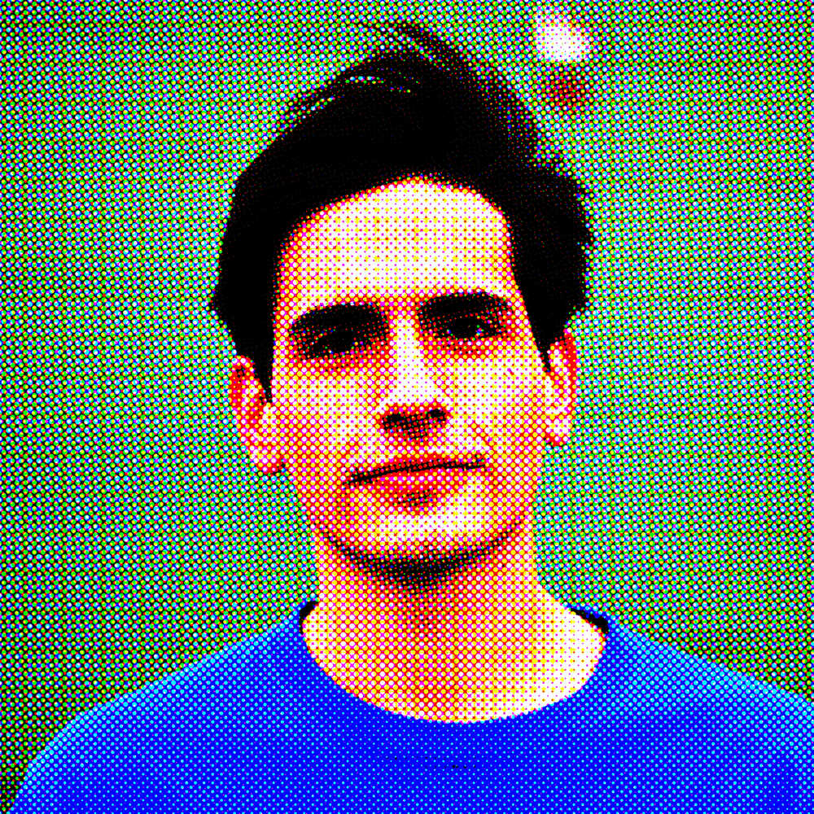
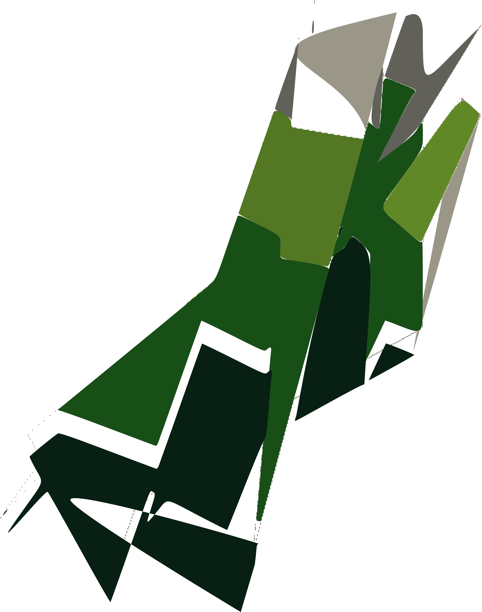

I am PhD Candidate in engineering science at Harvard University where I work with
Katia Bertoldi and
Chris Rycroft. My research interests
are broad spanning experimental and computional mechanics, optimization, and biomedical engineering.
My current research topic involves understanding, exploring, and optimizing nonlinear mechanical structures.
Prior to attending Harvard, I completed my undergraduate degree in mechanical engineering at the University of Texas-Austin.
Hook 'em.
CV + Resume(TBD)

Version 0.0.1
Though this site is statically generated I will try to continually add content.
Things you may find here: blog posts about scientific computing, art, coffee, running, science, and perhaps some short foreign affairs write-ups.

There is more information in the sidebar! Go snoop around.